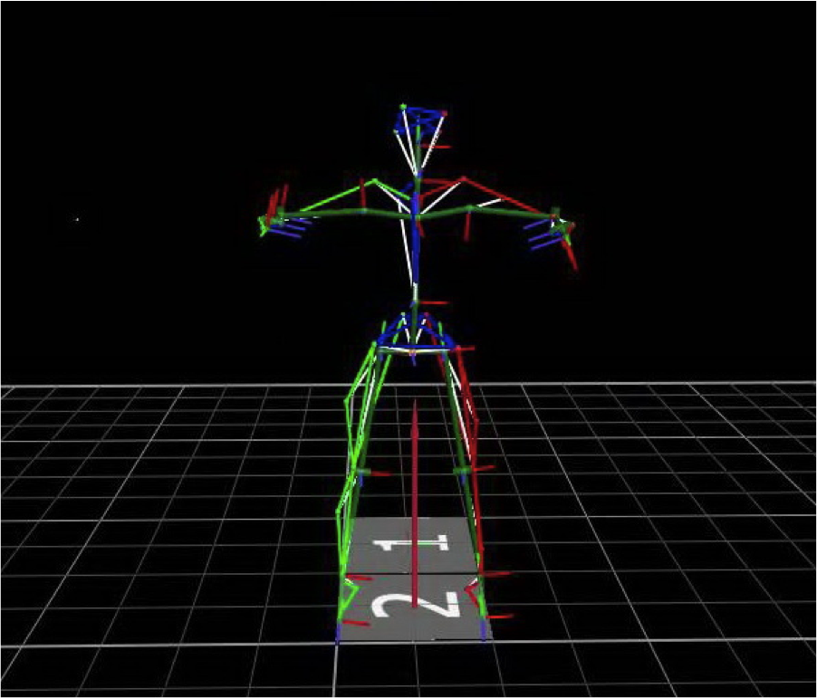
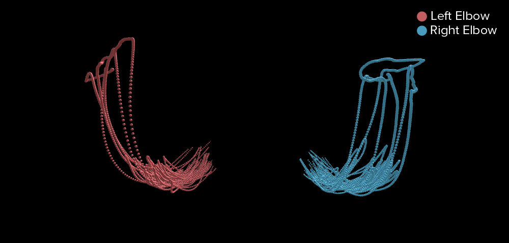
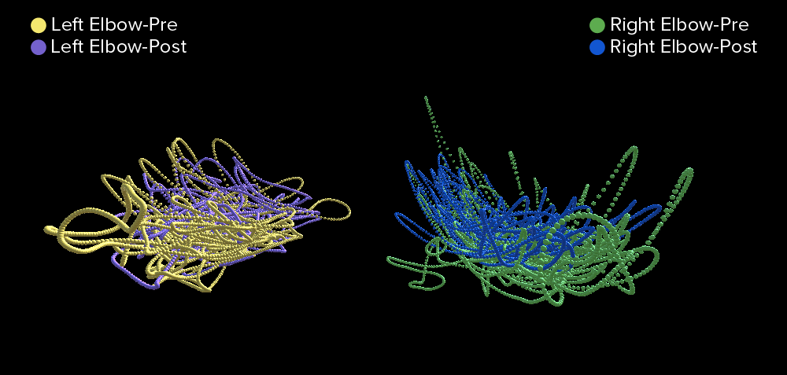

JASMINE CHABRA
THE NYU ABILITY LAB
The NYU Ability Lab is an interdisciplinary research space dedicated to the intersection between disability and technology. Currently, they are researching ways in which they can use the technologies and resources available at NYU to create assistive technology to help children with cerebral palsy. They are focusing on creating an environment to enhance physical therapy and rehabilitation treatments. They plan on doing so is by using one or more of the following technologies: environmental assessment (scanning/photogrammetry), computer vision, mixed reality (augmented reality and/or virtual reality), networked physics and collaboration, and/or telepresence.
To get information on existing physical therapy treatments for children with Cerebral Palsy, the NYU Ability Lab is working with the Center for Cerebral Palsy Research at Columbia University's Teacher's College.
Data
The reserach team at Center for Cerebral Palsy Reserach at Columbia University’s Teacher's College has collected data by using Vicon Motion Capture software on children with Cerebral Palsy. They host summer camps for children with hemiplegic cerebral palsy. These children are more affected on one side of their body (one arm and one leg). During the camps, they receive intensive intervention of their upper extremities called Constraint Induced Movement Therapy (CIMT) and Hand Arm Bimanual Intensive Treatment (HABIT). The research team has evaluated their inter-limb coordination before and after the camp. To do this, they asked the children to perform four tasks: 1) stand and swing their arms in the same direction (forwards and backwards), 2) stand and swing their arms in the opposite direction (like a person would if they were walking), 3) swing their arms in the same direction while marching in place, 4) swing their arms in the opposite direction while marching in place. The lab is now trying to analyze the relationships between the limbs, arm to arm, arm to contralateral leg (across body; ex: left arm and right leg), and arm to ipsilateral leg (same side of the body; ex: left arm and right arm). The lab collects the raw data from Vicon and runs the data set through an algorithm, which cleans the data into a more readable Excel format.
Sample Raw Data
As per the request of my community partner, I used the raw data for pre and post treatment of a representive subject (a child with cerebral palsy). The image below is a sample of the raw data.
- Frame Number: 120 Frames equal one second
- LELB: Left Elbow
- LFRA: Left Forearm
- RELB: Right Elbow
- RFRA: Right Forearm
- LANK: Left Ankle
- RANK: Right Ankle
Click here to view my data
Individual Limbs Pre and Post Treatment Over Time

Notes:
- The frame number represents time. Vicon Nexus software captures 120 frames per second.
- As I mentioned earlier, the children perform each condition for 35 seconds.
- The data was collected based on the movement of the arms asymmetrically front and back while marching.
Insights:
- As you click through each graphic to view the individual limbs, you can see how the movement of the limbs are more stable post treatment.
- The data was collected based on the movement of the arms asymmetrically front and back while marching.
3D Data Visualization
The 3D Data Visualization was created in Unity3D. It portrays the movement of the elbows - both pre and post treatment. Both of the before and after treatments are superimposed to make it easy to see the results.
COMPARISON:
I have included what the movement of the left and right elbows looks like for a healthy human body. Below the healthy body visualization is a visualization of the representative subject of a child with Cerebral Palsy.
Health Body

A Child with Cerebral Palsy (Representative Subject) Pre and Post Treatment

Click here to view the Interactive Visualization
*Chrome does not support WebGL content. Please view the visualization in Safari or Firefox.
Notes & Insights:
- The subject is more affected on the left side of his body – specifically in his arm. As you can see, the movement in his left arm seems more chaotic, which is why it looks like a small ball compared to the right one, which looks like a U shape.
- The data was collected based on the movement of the arms asymmetrically front and back while marching.
- The interactive visualization shows the frame number on hover.
Unity3D Code on Github
Sketches & Iterations
Sketch 1:
My initial sketch was for a 2D visualization in Tableau. Since my community partner wants to compare the movement of each limb independently, I feel that a line graph is the ideal way to visualize this. The legend on the right side will also be a filter option so they can view each limb individually or select more than one at a time for comparison.
Sketch 2:
Since the data has x, y and z coordinates, I sketched out designs for 3D visualizations. For this, I am imagining a way use animation to show the movement of the limbs over time. In this sketch, the idea is that the a human skeleton (the stick figure) would be animated and each limb would move as the slider moves.
Sketch 3:
My final iteration of sketches portrays movement of the limbs in one fixed location. This version would be static, but the visualization will display the results of the movement for each limb.
^